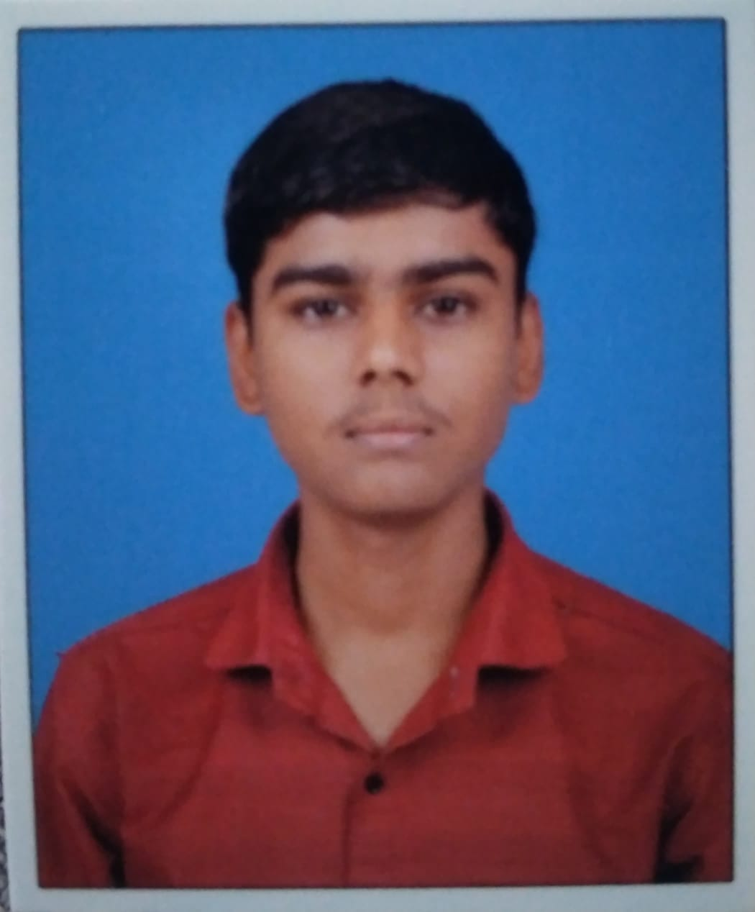

I am a first-year diploma student in Computer Engineering at Government Polytechnic Karad. I am interested in web page development and C programming. I like learning new technical concepts and improving my practical skills step by step.
download Resume
My name is Amrut Nilkanth Bobade. I am completing my first year Diploma in Computer Engineering at Government Polytechnic Karad. I am a sincere and motivated student who wants to build a strong future in the computer field. I am interested in website creation, programming, and learning useful technical skills. I always try to improve my knowledge and gain practical experience through study and project work.
I am pursuing Diploma in Computer Engineering from Government Polytechnic Karad. Currently, I am in the first year of my diploma course and building my foundation in programming, computer subjects, and web development.
A simple personal website to present my profile, education, skills, and contact details.
A website created for road safety awareness with pages like home, causes, rules, help, and contact.
Academic C programs based on recursion, factorial, Fibonacci series, prime factors, and pointers.
Name: Amrut Nilkanth Bobade
Course: Diploma in Computer Engineering
College: Government Polytechnic Karad
Email: amrutbobade8@gmail.com
Phone: +91 9172868712
Location: Satara,Maharashtra, India